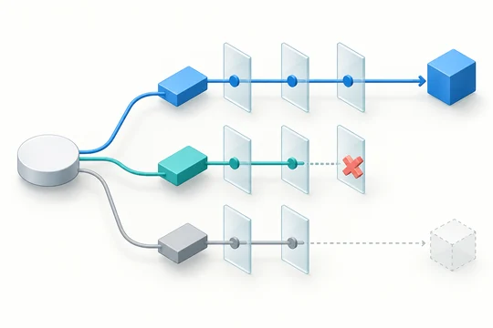
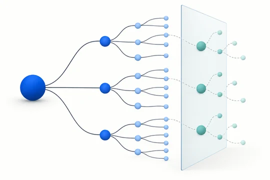
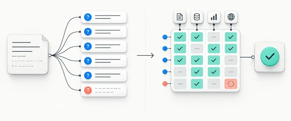

Перевірити висновок
Перевірка перед висновком
Перевірте припущення й альтернативи, перш ніж робити висновок.
Переглянути промпт
Бібліотека дослідницьких промптів
Три промпти, щоб перевірити висновки, знайти сліпі зони й зібрати контекст.
Перевірити висновок
Перевірте припущення й альтернативи, перш ніж робити висновок.
Переглянути промпт
Знайти сліпі зони
Розкрийте приховані залежності та знайдіть наступні питання.
Переглянути промпт
Зібрати контекст
Спочатку уточніть важливе, потім переходьте до дослідження.
Переглянути промпт
Попередній аналіз
Результати, методика та звіти браузерного експерименту.
Переглянути результати